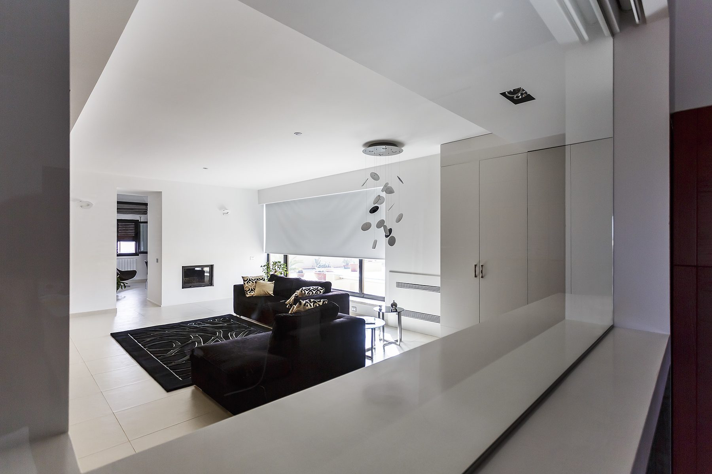

Home › Ristrutturare casa a Palermo
Ristrutturare casa a Palermo: costi, permessi e tempi (guida 2026)
A cura di Studio 4e, architetti a Palermo dal 1996 · Aggiornato il
Tutto quello che serve sapere prima di ristrutturare un appartamento o una casa a Palermo: quanto costa al metro quadro, quali pratiche presentare al Comune, quali bonus usare, quanto durano i lavori e come evitare gli imprevisti tipici degli edifici palermitani.

In sintesi: ristrutturare casa a Palermo costa indicativamente 600-900 €/mq per un intervento completo con impianti nuovi (da 300 €/mq per un rinnovo leggero, oltre 1.200 €/mq per finiture alte o immobili storici). Se modifichi tramezzi o impianti serve la CILA; per un appartamento di 80-100 mq calcola 3-5 mesi di cantiere più 1-2 mesi di progetto e pratiche. Prima di chiedere preventivi, fatti preparare un computo metrico: è l'unico modo per confrontare le imprese.
Quanto costa ristrutturare casa a Palermo
Il costo dipende soprattutto da tre fattori: quanto impianti e struttura vanno rifatti, il livello delle finiture e lo stato di partenza dell'immobile. I valori qui sotto sono indicativi, riferiti ai soli lavori (IVA, progetto e pratiche esclusi), e servono a impostare un budget realistico.
| Tipo di intervento | Cosa comprende | Costo indicativo |
|---|---|---|
| Rinnovo leggero | Pitture, pavimenti sovrapposti, sostituzione sanitari e porte | 300-500 €/mq |
| Ristrutturazione completa | Demolizioni, nuovi tramezzi, impianto elettrico e idraulico, bagno, pavimenti, infissi interni | 600-900 €/mq |
| Ristrutturazione di pregio | Finiture alte, arredi su misura, domotica, climatizzazione canalizzata | 1.000-1.500 €/mq |
| Immobile storico / vincolato | Consolidamento solai, recupero di volte e pavimenti antichi, pareri della Soprintendenza | da 1.200 €/mq |
Esempio: un appartamento di 80 mq in zona Libertà con impianti degli anni '70 da rifare e finiture di livello medio richiede in genere 50.000-70.000 € di lavori. A questi si aggiungono la parcella del tecnico (vedi quanto costa un architetto a Palermo) e i diritti per le pratiche. Il dettaglio delle voci è nella guida ai costi di ristrutturazione casa a Palermo e nell'hub dei costi.
Per i singoli ambienti: ristrutturazione del bagno e ristrutturazione della cucina sono le voci che incidono di più al metro quadro, perché concentrano impianti, rivestimenti e sanitari.
Permessi: CILA, SCIA o nessuna pratica?
La pratica dipende dal tipo di lavoro, non dalla spesa. Si presenta al SUE (Sportello Unico per l'Edilizia) del Comune di Palermo tramite un tecnico abilitato.
- Nessuna pratica (edilizia libera) – tinteggiature, sostituzione di pavimenti, rivestimenti e sanitari senza modificare impianti e distribuzione.
- CILA – spostamento o demolizione di tramezzi non portanti, rifacimento degli impianti, accorpamento di ambienti. È il caso più frequente quando si ristruttura casa: si deposita e si può iniziare.
- SCIA – interventi su parti strutturali (aperture in muri portanti, solai), frazionamenti e fusioni con opere strutturali.
- Permesso di Costruire – ampliamenti, nuovi volumi, modifiche di sagoma o prospetto rilevanti.
Due verifiche da fare prima di progettare: la conformità urbanistica dell'immobile (difformità esistenti vanno sanate prima o insieme ai lavori) e il regolamento di condominio. Se l'edificio ricade nel centro storico o è vincolato, alcune opere richiedono anche il nulla osta della Soprintendenza ai Beni Culturali di Palermo. Approfondisci in pratiche edilizie a Palermo e permessi per ristrutturazione.
Le fasi e i tempi di una ristrutturazione
| Fase | Cosa succede | Durata tipica |
|---|---|---|
| 1. Sopralluogo e rilievo | Misure, stato di impianti e strutture, verifica documenti catastali e urbanistici | 1-2 settimane |
| 2. Progetto | Layout, render 3D, scelta finiture, progetto esecutivo | 3-6 settimane |
| 3. Computo e preventivi | Computo metrico e capitolato, confronto tra 2-3 imprese | 2-3 settimane |
| 4. Pratiche | CILA (immediata) o SCIA; eventuali pareri | da subito a 30+ giorni |
| 5. Cantiere | Demolizioni, impianti, massetti, finiture, con direzione lavori | 3-5 mesi (80-100 mq) |
| 6. Chiusura | Certificazioni impianti, fine lavori, aggiornamento catastale | 2-4 settimane |
Cosa rende diverso ristrutturare a Palermo
- Murature in tufo e calcarenite – molto diffuse negli edifici storici e del primo Novecento: assorbono umidità e richiedono intonaci traspiranti, non cementizi.
- Solai in legno o in putrelle e voltine – vanno verificati prima di caricare nuovi massetti o spostare bagni e cucine.
- Impianti datati – in molti palazzi degli anni '60-'70 di zona Libertà, Notarbartolo e Politeama gli impianti sono da rifare integralmente: conviene prevederlo nel budget fin dall'inizio.
- Logistica di cantiere – nel centro storico e nelle aree ZTL servono permessi per l'accesso dei mezzi e l'occupazione di suolo pubblico; le strade strette incidono su tempi e costi di trasporto e smaltimento.
- Clima – caldo estivo e salsedine (Mondello, Sferracavallo, Arenella) orientano la scelta di infissi, isolamento e materiali: vedi ristrutturare una casa al mare.
Per immobili nei quartieri storici leggi anche architetto a Palermo Centro e restauro architettonico.
Bonus per ristrutturare casa nel 2026
Il riferimento principale è il Bonus Ristrutturazione, una detrazione IRPEF ripartita in 10 anni su un tetto di spesa di 96.000 € per unità immobiliare, con aliquota più alta per l'abitazione principale. Si può abbinare al Bonus Mobili e, per infissi, caldaie e pompe di calore, all'Ecobonus. Aliquote e requisiti cambiano con ogni Legge di Bilancio: verificali con il tuo commercialista prima di firmare i contratti, paga con bonifico parlante e conserva la pratica edilizia. Approfondisci in bonus ristrutturazione in Sicilia e incentivi ristrutturazione.
Gli errori che fanno sforare budget e tempi
- Chiedere preventivi senza computo metrico: ogni impresa quota lavori diversi e i prezzi non sono confrontabili.
- Demolire prima di aver verificato impianti e solai: le sorprese emergono a cantiere aperto, quando costano di più.
- Non verificare la conformità urbanistica: una difformità scoperta tardi blocca la pratica e, in caso di vendita, il rogito.
- Scegliere le finiture durante i lavori: ogni decisione rinviata è un fermo cantiere.
- Nessuna direzione lavori: senza un controllo indipendente varianti e contabilità restano nelle mani dell'impresa.
Chi chiamare per ristrutturare casa a Palermo
Per qualsiasi lavoro che richieda CILA o SCIA serve un tecnico abilitato. Un architetto, però, non si limita alla pratica: progetta gli spazi, prepara computo e capitolato, ti aiuta a scegliere l'impresa e segue il cantiere fino alla chiusura. Se stai valutando a chi affidarti, leggi il ruolo dell'architetto nella ristrutturazione e la guida ai migliori studi di architettura a Palermo.
Studio 4e, con sede in Piazza Sant'Oliva 19, segue ristrutturazioni di appartamenti, ville e locali a Palermo dal 1996: rilievo, progetto, pratiche, scelta dell'impresa e direzione lavori.
Devi ristrutturare casa a Palermo?
Scrivici metratura, zona e cosa vorresti cambiare: ti diamo una prima stima di costi, pratiche e tempi.
Domande frequenti
Quanto costa ristrutturare casa a Palermo al metro quadro?
Indicativamente da 300-500 €/mq per un rinnovo leggero, 600-900 €/mq per una ristrutturazione completa con impianti nuovi e finiture di livello medio, oltre 1.000-1.200 €/mq per finiture alte o immobili storici. Per un appartamento di 80 mq una ristrutturazione completa parte quindi da circa 50.000-70.000 € di lavori, a cui si aggiungono progetto, pratiche e IVA.
Serve la CILA per ristrutturare casa a Palermo?
Per la manutenzione ordinaria (tinteggiature, sostituzione di pavimenti e sanitari senza modifiche) non serve alcuna pratica. Se sposti tramezzi, rifai gli impianti o modifichi la distribuzione interna senza toccare parti strutturali serve la CILA. Interventi strutturali, cambi di destinazione d'uso o modifiche di prospetto richiedono SCIA o Permesso di Costruire. Le pratiche si presentano al SUE del Comune di Palermo tramite un tecnico abilitato.
Quanto tempo serve per ristrutturare un appartamento a Palermo?
Per un appartamento di 80-100 mq con rifacimento di impianti e finiture servono in genere 3-5 mesi di cantiere, preceduti da 1-2 mesi di rilievo, progetto, preventivi e pratiche. Negli immobili vincolati del centro storico i tempi si allungano per i pareri della Soprintendenza.
Quali bonus posso usare per ristrutturare casa a Palermo nel 2026?
Il principale è il Bonus Ristrutturazione (detrazione IRPEF su un tetto di spesa di 96.000 € per unità, con aliquota maggiorata per l'abitazione principale), spesso abbinato al Bonus Mobili e all'Ecobonus per infissi e impianti. Aliquote e requisiti cambiano con la Legge di Bilancio: verificali con il tuo commercialista prima di iniziare e conserva pratiche edilizie e bonifici parlanti.
Conviene affidarsi a un architetto per ristrutturare casa a Palermo?
Per lavori che richiedono CILA o SCIA un tecnico abilitato è obbligatorio. Un architetto, inoltre, prepara computo metrico e capitolato che rendono confrontabili i preventivi delle imprese e segue la direzione lavori, riducendo varianti e costi imprevisti, che sono la prima causa di sforamento del budget.
Nota: costi e tempi sono indicativi e variano in base all'immobile; per una stima affidabile serve un sopralluogo.
Approfondimenti
- Ristrutturare un appartamento a Palermo
- Costi ristrutturazione casa a Palermo
- Progetto di ristrutturazione casa
- Il ruolo dell'architetto nella ristrutturazione
- Ristrutturazione bagno
- Ristrutturazione cucina
- Restyling appartamento
- Ristrutturare per affitti brevi
- Direzione lavori a Palermo
Architetto a Palermo: Home · Interni · Restauro · Pratiche edilizie · Costi · Palermo Centro · Mondello · Bagheria · Studio 4e